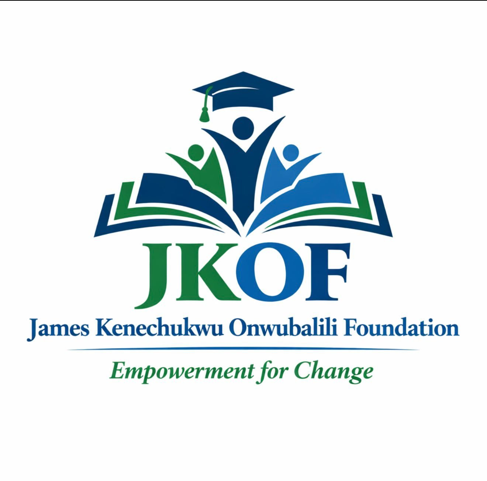

Affiliate Foundation — Registered 2023
Empowerment for Change
An affiliate of the parent foundation in the United Kingdom, supporting academically gifted but financially disadvantaged students across Southern Nigeria.
The Nigeria Foundation
James Kenechukwu Onwubalili Foundation (NIG) was registered with the Corporate Affairs Commission Nigeria in 2023. It is an affiliate of the parent foundation, James Kenechukwu Onwubalili Foundation (UK), which is registered as a Charitable Incorporated Organisation of England and Wales (2026).
The Foundation operates across Southern Nigeria, working with partner schools to identify and support academically gifted students who require financial assistance to continue their education and achieve their potential.
The Trustees for the parent and affiliate foundations come from diverse professional backgrounds. They include medical doctors from different specialties (Surgery, Nephrology, Public Health, Haematology, Accident & Emergency, General Practice), a Certified Independent/Non-Executive Director (Financial Sector), University Lecturers, a Headteacher, a Real Estate Consultant, Deputy Managing Director at Society for Family Health and a Lawyer.
Working Across Southern Nigeria
Abia State
Enugu State
Oyo State
Ogidi, Anambra State
Enugwu-Ukwu, Anambra State
Enugwu-Ukwu, Anambra State
Nnobi, Anambra State
Make a Difference in Nigeria
Your contribution directly supports scholarships for gifted students across Southern Nigeria who face financial barriers to education.
Account Name: James Kenechukwu Onwubalili Foundation
Bank: Zenith Bank
Account Number: 1313476410
Registered with the Corporate Affairs Commission in Nigeria (Registration Number: 7061941)
Nigeria Office
James Kenechukwu Onwubalili Foundation (NIG)
Peniel Building, No. 3, Ashabi Cole Street
Central Business District, Alausa, Ikeja
Nigeria
Phone: +44 750 636 3431
Email: info@jkofoundation.org
Registration: 7061941